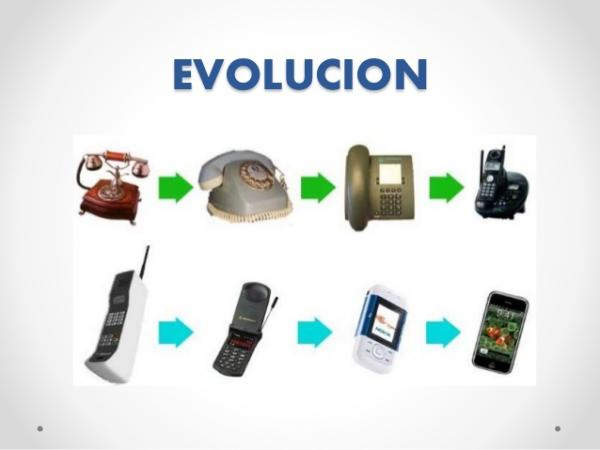

.aqui conoceras todo sobre la evolucion de el telefono 📲

<
----> COMO SUCEDIO TODO? <----
su inicio se dio en 1984
sus inventores fueron (alexander Graham bell) (antonio meucci)
El primer teléfono inteligente (smartphone) se llamaba Simón, y contaba con pantalla táctil y correo electrónico
El primer teléfono comercial pesaba 1150 gramos
La primera llamada a través de móvil la realizó en 1973 Martin Cooper (Motorola)
.ACONTINUACION TE DEJARE UN VIDEO RESUMEN DE LA EVOLUCION EN 5 MINUTOS!